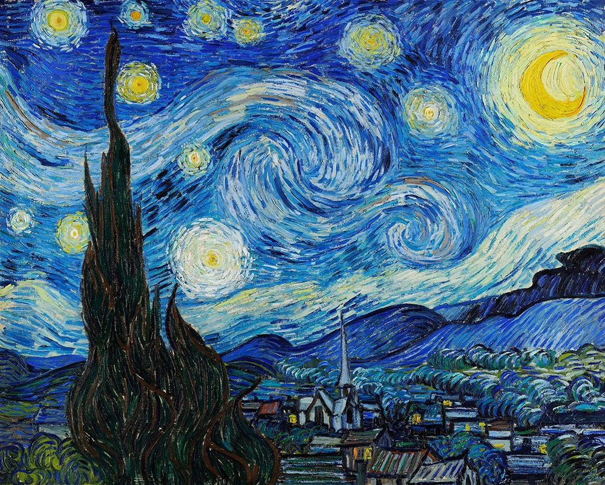

This website showcases a diverse range of artwork while highlighting each artist’s name and social media information. It also offers the opportunity for visitors to hire artists directly for commissions, creating a platform that supports and promotes creative talent.
These are famous pieces of art that you could do too!
The Mona Lisa is a half-length portrait painting by the Italian artist Leonardo da Vinci. Considered an archetypal masterpiece of the Italian Renaissance, it has been described as "the best known, the most visited, the most written about, the most sung about, and the most parodied work of art in the world." The painting's novel qualities include the subject's enigmatic expression, monumentality of the composition, the subtle modelling of forms, and the atmospheric illusionism.
A classic painting of the night sky is Vincent van Gogh's The Starry Night. Painted in June 1889, it depicts the view from his asylum room window at Saint-Rémy-de-Provence, with a stylized and emotionally charged night sky. The painting is known for its swirling brushstrokes, vibrant colors, and symbolic representation of the night sky.
This is the museum where you can upload images